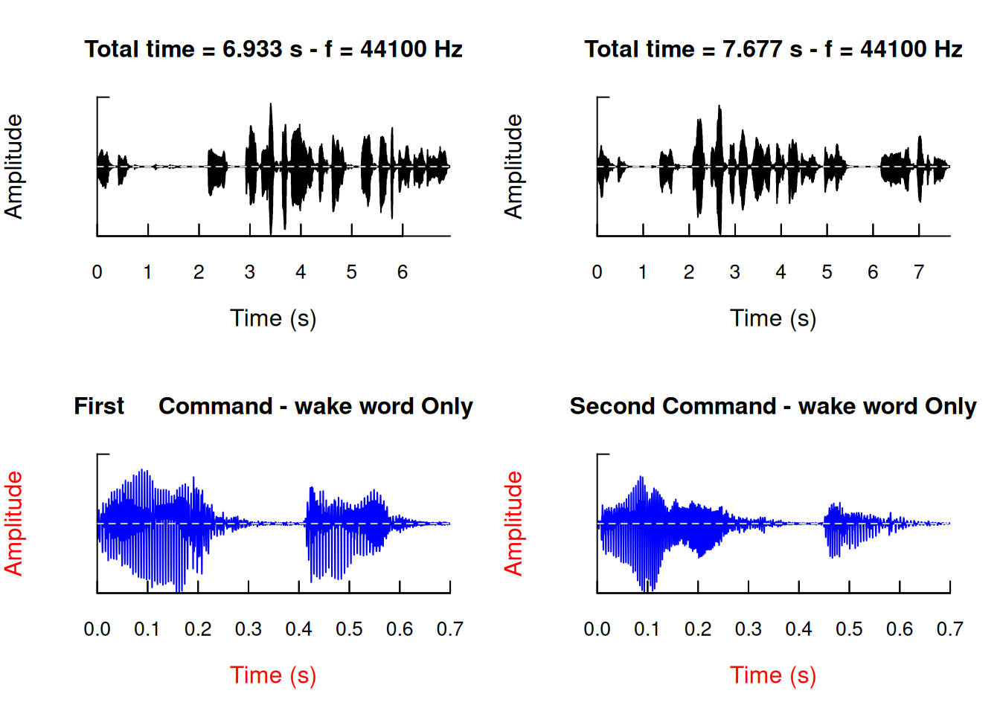
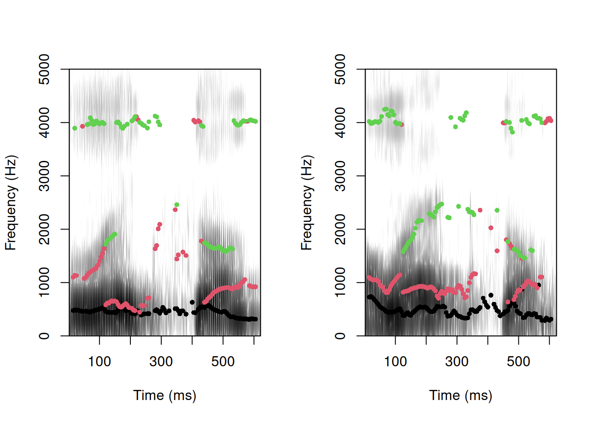
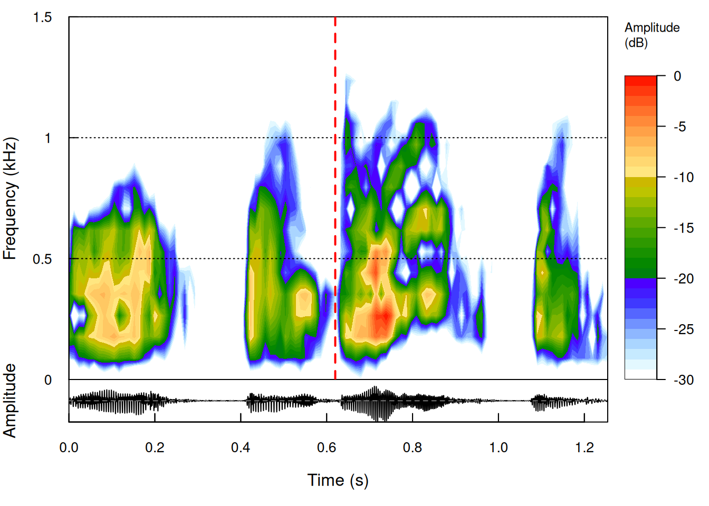

library(tuneR)
cmd1 <- readWave("alexa_cmd1.wav")
cmd2 <- readWave("alexa_cmd2.wav")Interpersonal communication transcends mere words, incorporating nuanced nonverbal signals where the voice plays a pivotal role. We dynamically adjust our voice to convey emotions, such as happiness or sadness, and intentions, including subtle nuances like sarcasm. We even form impressions from the way someone speaks. Therefore, analyzing not just the content but also the delivery—the voice—is essential for a more comprehensive understanding of communication.
Voice analytics: Decoding the vocal spectrum
Voice analytics precisely aims to achieve this by examining the voice beyond its linguistic content. Various methods exist for conducting voice analytics, with one of the most common involving the extraction of different characteristics from the voice, known as vocal features. These features include amplitude, correlated with the loudness of a sound, and fundamental frequency, associated with pitch—that is, how high or low we perceive a voice to be. For instance, amplitude provides insights into the volume or intensity of speech, while fundamental frequency helps discern the pitch variations in a speaker’s voice.
The analytical process: From acquisition to statistical analysis
However, before delving into the extraction of vocal features, a series of pivotal steps forms an integral part of the analytical process. The initial phase entails the acquisition of voice recordings, achievable through direct recording or retrieval from publicly accessible sources. Once the files are obtained, meticulous processing becomes indispensable, involving the arrangement of metadata and validation of collected files to ensure precision and organizational coherence.
Following this preparatory phase, the subsequent step involves reading and preprocessing the voice files. This encompasses data preprocessing and transformation by primarily eliminating extraneous elements, such as irrelevant utterances and background noise. These preprocessing steps are crucial for ensuring the quality of the data.
After preprocessing the audio files, we can extract the vocal features of interest, such as amplitude and fundamental frequency. These features can subsequently be explored through visualization and the computation of summary statistics to gain a deeper understanding. This exploration may reveal further anomalies, or matters requiring additional processing may be detected. Consequently, we may proceed to further preprocess the audio files. Once the data attains sufficient quality, the process culminates in statistical analysis. In this phase, the extracted vocal features may be compared through statistical tests or used to train prediction models. This whole process is depicted in Figure 1.
It is imperative to recognize that the process just described here is a simplified abstraction of the voice analytics process. Practical voice analytics is characterized by flexibility and adaptability rather than a rigidly linear progression. This iterative nature accommodates refinements and adjustments, ultimately enhancing the robustness and accuracy of the analytical outcomes.
To illustrate how voice analytics operates in a real-world context, we offer a simple, practical tutorial using R. This tutorial walks you through the fundamental steps of the voice analytics pipeline, from reading audio files to extracting vocal features and drawing basic inferences.
Understanding user frustration
In this tutorial, we will analyze a compelling video featuring a female Scottish user attempting, albeit humorously, to issue a command to Amazon Alexa to play a song on Spotify. This viral video, though amusing, highlights a common frustration many users encounter when trying to communicate effectively with voice-controlled interfaces.
Data acquisition and processing
Data acquisition
For our comprehensive analysis, we begin by extracting the audio from the previous video and converting it into the Waveform audio file format (WAV). In this scenario, we are interested in two pivotal aspects of this interaction:
Speech Formation of the wake word “Alexa”
Vocal Changes During the Issuance of a Command (“Alexa, play something is cooking in my kitchen on Spotify by Dana”)
To facilitate our analysis, we cropped the voice recordings, retaining only the segments containing the two initial commands, including the wake word “Alexa”. In the first command, the speaker calmly requests Alexa to play a song. However, it becomes apparent that Alexa doesn’t comprehend the given command. Consequently, the speaker repeats the same command with a noticeable tone of frustration.
Our following sections will delve into a detailed examination of this particular case, untangling the distinctions between these two commands that lead us to perceive frustration from the user’s perspective. You can download the files for this example by clicking the following button.
Our analytical approach primarily leverages the seewave package, which has emerged as the gold standard in R-sound analysis. This versatile package encompasses an impressive array of 130 functions designed for the analysis, manipulation, representation, editing, and synthesis of time-based audio waveforms. While seewave serves as our cornerstone, we also make reference to other valuable packages, such as tuneR, soundgen, and phonTools, for their specialized functionalities as needed.
Reading sound files
As previously mentioned, the primary focus of this tutorial centers around the utilization of the seewave package. While it is important to note that seewave lacks native capabilities for sound file reading, we adeptly overcome this limitation by harnessing functions from complementary packages. It is important to emphasize that some packages may use distinct classes for sound objects. Consequently, when choosing an alternative package to load sound data, it becomes paramount to consider this inherent class compatibility.
In the context of seewave, its core functionalities are tailored to work with sound objects of the Wave class. These Wave class sound objects are conventionally created using the tuneR package. Hence, when working with seewave, it is strongly recommended to employ tuneR for sound data loading.
To load the two user commands including the wake word from the interaction with Amazon Alexa, we use the readWave() function from the tuneR package. This function loads or reads a sound file from a specified location, which we need to pass as its main argument. Additionally, we assign the resulting outputs from reading the two commands to two objects called cmd1 and cmd2, as shown below:
After loading these two recordings into R, we can call them to obtain an informative output showing several basic characteristics of these recordings. These characteristics encompass:
Number of Samples: This indicates the total count of discrete data points in the audio waveform.
Duration (in seconds): The elapsed time in seconds, capturing the length of the audio.
Sampling Rate (in Hertz): Denoting the rate at which individual samples are taken per second.
Number of Channels: It signifies whether the audio is mono (single channel) or stereo (two channels).
Bit Rate: Representing the number of bits processed per unit of time.
Below we can see the output for the cmd1 and cmd2 objects:
cmd1
Wave Object
Number of Samples: 335789
Duration (seconds): 7.61
Samplingrate (Hertz): 44100
Channels (Mono/Stereo): Stereo
PCM (integer format): TRUE
Bit (8/16/24/32/64): 16 cmd2
Wave Object
Number of Samples: 368128
Duration (seconds): 8.35
Samplingrate (Hertz): 44100
Channels (Mono/Stereo): Stereo
PCM (integer format): TRUE
Bit (8/16/24/32/64): 16 Upon inspecting this information, it becomes evident that both recordings share identical sampling rates, channel numbers, and bit rates. However, the second recording is 0.74 seconds longer than the first.
Moreover, the readWave() function provides additional optional arguments to enhance control over file reading. Notably, the from and to arguments enable users to selectively read specific segments of the audio file. By default, these arguments operate in sample units, defining the segment based on sample counts. However, the readWave() function introduces the units argument, allowing users to customize the units of the from and to arguments to seconds, minutes, or hours.
To illustrate, suppose we aim to extract two segments from the first command, denoted as cmd1.s1 and cmd1.s2. The first segment covers the initial 0.5 seconds of the recording, while the second spans from that point to 2 seconds. This can be accomplished by directly using the readWave() function and specifying the from, to, and units arguments, as shown below:
(cmd1.s1 <- readWave("alexa_cmd1.wav",from=0,to=0.5,units="seconds"))
Wave Object
Number of Samples: 22050
Duration (seconds): 0.5
Samplingrate (Hertz): 44100
Channels (Mono/Stereo): Stereo
PCM (integer format): TRUE
Bit (8/16/24/32/64): 16 (cmd1.s2 <- readWave("alexa_cmd1.wav",from=0.5,to=2,units="seconds"))
Wave Object
Number of Samples: 66150
Duration (seconds): 1.5
Samplingrate (Hertz): 44100
Channels (Mono/Stereo): Stereo
PCM (integer format): TRUE
Bit (8/16/24/32/64): 16
Note
Wrapping the code in parentheses triggers automatic printing.
Playing a sound file
Something that we may need at several points of the voice analytics pipeline is to play the recordings/processed recordings, as an additional way to inspect it. Although, R itself cannot play sound files the seewave’s listen() function allows us to call the default audio player of the user’s operating system from R to play the selected audio.
To do so, we first load the seewave package:
library(seewave)Now, you can employ the listen() function to play audio, for instance, to play the sound recorded in cmd1:
listen(cmd1)We could do the same for the second command:
listen(cmd2)Both commands convey identical content but with a slight variation in order. In the first command, the speaker instructs: “Alexa, play ‘Something Is Cooking in My Kitchen’ on Spotify by Dana”. In contrast, the second command the speaker says: “Alexa, play ‘Something Is Cooking in My Kitchen’ by Dana on my Spotify”.
Similar to the readWave() function, listen() supports the from and to arguments, enabling precise selection of sections for auditory playback. Additionally, it allows us to manipulate the sampling frequency rate through the f argument, altering the speaking rate. You can run the following code to hear the first command (cmd1) with a sampling rate 10% higher and with a sampling rate 10% lower, respectively:
listen(cmd1, f=cmd1@samp.rate*1.1)listen(cmd1, f=cmd1@samp.rate/1.1)
Note
For convenience, subsequent sections directly include sound players after each processed or newly generated audio without explicitly calling the listen() function. Nevertheless, it is crucial to remember that for playing Wave objects through R, the listen() function must be utilized.
Preprocessing sound files
In many instances, effective preprocessing of diverse voice files is crucial to optimize their overall quality. This preprocessing involves a variety of tasks, such as (1) extracting specific segments of interest from a sound wave, (2) removing selected utterances from a soundwave, (3) trimming periods of silence at the beginning or end of a sound file, (4) filtering out all unvoiced frames from a sound file, and (5) eliminating background noise.
The tuneR and seewave packages provide a comprehensive set of functions designed to address these diverse preprocessing procedures:
extractWave(): This function facilitates the extraction of desired segments from a soundwave. Users can specify the segments using thefromandtoarguments, as discussed earlier. The default units for theextractWave()function are samples, but users can adjust this using thexunitargument. Specifically, setting ‘xunit’ to “time” enables the extraction of segments in seconds.deletew(): This function removes specific portions from a soundwave. As in the case ofextractWave(), users can specify segments using thefromandtoarguments. Notably, for this function, these values are directly specified in seconds. By default, this function returns amatrix, but we can change the output type to aWaveobject by specifying theoutputargument to"Wave".noSilence(): Particularly useful for removing periods of silence from the beginning and/or end of a sound file. By default, it removes silence periods from both the beginning and end. However, users can modify this behavior using thewhereargument, specifying"start"to remove only the beginning silent frames or"end"to remove only the end silent frames.zapsilw(): This function eliminates all unvoiced frames from a sound file. Users can customize this operation by setting the ‘threshold’ argument, which measures the amplitude threshold (in percent) distinguishing silence from signal. Thezapsilw()function also, by default, plots oscillograms for both the original sound file and the modified version (after removing the silent voice frames), providing visual insight into the process. Automatic plotting of oscillograms can be deactivated by setting theplotargument toFALSE. Like other functions within theseewavepackage, this function returns amatrixby default. However, the output type can be changed to aWaveobject specifying theoutputargument as"Wave".rmnoise(): Thermnoise()function effectively eliminates background noise from a sound file through smoothing. Like other functions within theseewavepackage, this function returns amatrixby default. However, the output type can be changed to aWaveobject specifying theoutputargument as"Wave".
These functions allow us to easily manipulate sound files, ensuring they are tailored to meet the specific requirements of the analyses. To illustrate their practical utility, let’s delve into some illustrative examples.
Using the extractWave() function
For example, let’s employ the extractWave() function to isolate a specific segment from the first command which we assigned to the cmd1 object. Suppose our goal is to extract the initial 0.8 seconds of that file. To achieve this, we must set four arguments. Initially, the primary argument should be the object of the Wave class, representing the sound file from which we intend to extract a segment. Next, we need to specify the from and to arguments, indicating 0 and 0.8, respectively—indicating the segment we wish to extract spans from 0 to 0.8 seconds. It’s essential to note that, by default, these arguments are not expressed in seconds. Consequently, we need to explicitly set the xunit argument to "time" to ensure the units are interpreted as seconds. Otherwise, they would be interpreted as sample units. Therefore, we can extract the first 0.8 seconds from the first command stored in cmd1, which corresponds to the wake word “Alexa”, storing the resulting isolated segment in an object called cmd1.xtr, as demonstrated below:
#Extract first 700ms
cmd1.xtr <- extractWave(cmd1, from = 0, to = 0.8, xunit = "time") Using the deletew() function
Alternatively, rather than extracting this segment, we can adopt the opposite strategy: removing this segment. This task is easily accomplished using the deletew() function. The arguments required for this operation are quite similar to the previous ones, with the distinction that there’s no need to specify an xunit argument, as the units are already in seconds (and cannot be changed). However, it is essential to specify an output argument to obtain an output of the Wave class. Consequently, we can create a new Wave object that excludes the first 0.8 seconds from the initial command, i.e., excluding the wake word “Alexa”, storing the output into cmd1.rem in the following manner:
#Delete first 800ms
cmd1.rem <- deletew(cmd1, from=0, to=0.8, output="Wave") Using the noSilence() function
Thus far, we have delved into the extraction and deletion of specific audio segments defined by a time frame. However, there are scenarios where our interest lies in removing segments that meet specific conditions, such as unvoiced segments at the outset and conclusion of an audio file. This practice is frequently employed to standardize audio files, as variations in the length of unvoiced frames at the start and end may not necessarily be linked to speaker pauses but could be influenced by other factors. For instance, this variability could be attributed to the individual recording, taking additional time to instruct the speaker to commence or conclude their speech, or to manage the recording process after the speaker has concluded.
To accomplish this, we can use the noSilence() function. Therefore, if we wish to eliminate the initial and end unvoiced frames of the initial command, stored in cmd1, and store the output in a new object called cmd1.cut, we can achieve this with the following code:
#Remove only unvoiced start and ending
cmd1.cut <- noSilence(cmd1, level = 350)It is important to highlight that we define a argument called level with a value of 350. This argument determines the amplitude level below which samples are considered unvoiced and subsequently removed. BBy default, this value is initialized to zero, which proves overly restrictive in our context. This default setting would result in the detection of no unvoiced areas, given the presence of background noise at the end of the audio, despite these areas being unvoiced.
To address this limitation, we choose a much higher value, specifically 350. This value is carefully selected to be sufficiently elevated to avoid removing voiced areas while effectively identifying and removing unvoiced segments. After running the previous code, we proceed to compare the original and processed commands:
cmd1
Wave Object
Number of Samples: 335789
Duration (seconds): 7.61
Samplingrate (Hertz): 44100
Channels (Mono/Stereo): Stereo
PCM (integer format): TRUE
Bit (8/16/24/32/64): 16 cmd1.cut
Wave Object
Number of Samples: 305734
Duration (seconds): 6.93
Samplingrate (Hertz): 44100
Channels (Mono/Stereo): Stereo
PCM (integer format): TRUE
Bit (8/16/24/32/64): 16 Upon comparing both audio files, we can observe that the processed version is slightly shorter, specifically by 0.68 seconds, compared to the original command. Additionally, when listening to both audios, we can discern that the content of the audio has been effectively preserved in the processed version.
Using the zapsilw() function
Alternatively, we could eliminate all the unvoiced frames—not only those at the start and end but across all segments—of the first command (cmd1) using the zapsilw() function, as shown below:
#Remove all unvoiced frames of a soundwave
cmd1.nosil <- zapsilw(cmd1, output="Wave")By default, the zapsilw() function generates an oscillogram that compares the original sound recording with its processed counterpart, exemplified in Figure 2. By comparing both oscillograms we can see how unvoiced frames have been removed, characterized by minimal or absent amplitude. Furthermore, for a comprehensive analysis, the characteristics of both audio files can be compared by calling cmd1 and cmd1.nosil:
cmd1
Wave Object
Number of Samples: 335789
Duration (seconds): 7.61
Samplingrate (Hertz): 44100
Channels (Mono/Stereo): Stereo
PCM (integer format): TRUE
Bit (8/16/24/32/64): 16 cmd1.nosil
Wave Object
Number of Samples: 101647
Duration (seconds): 2.3
Samplingrate (Hertz): 44100
Channels (Mono/Stereo): Mono
PCM (integer format): TRUE
Bit (8/16/24/32/64): 16 When we look at the two files and compare their features, we can see that removing the unvoiced frames (cmd1.nosil) results in a reduction in both the number of samples and the recording duration. The original first command lasts for 7.61 seconds, whereas the processed command, with unvoiced frames removed, is much shorter, specifically having a duration of 2.30 seconds. In simpler terms, this means that 5.31 seconds, which corresponds to the unvoiced frames, have been effectively removed during the process. However, upon listening to cmd1.nosil, it becomes evident that the audio is now nearly incomprehensible. This is because the zapsilw() function removed frames that weren’t strictly unvoiced but had a significantly lower amplitude compared to the majority of voiced frames. The zapsilw() function includes an additional argument, the threshold, aimed at determining what qualifies as an unvoiced frame. The default threshold is 5% (5). Since the current threshold value resulted in the removal of an excessive number of frames for our specific case, let’s investigate the effects of adopting a much lower value, such as 0.3% (0.3):
cmd1.nosil2 <- zapsilw(cmd1, threshold=0.3, output="Wave")cmd1.nosil2
Wave Object
Number of Samples: 257922
Duration (seconds): 5.85
Samplingrate (Hertz): 44100
Channels (Mono/Stereo): Mono
PCM (integer format): TRUE
Bit (8/16/24/32/64): 16 As observed, the processed audio file is now longer than in the previous (5.85 vs 2.30 seconds), reflecting a decrease in the number of frames identified as unvoiced. Additionally, upon listening, the processed audio exhibits a more natural sound compared to the previous version. It’s worth noting that, while it may not replicate the exact naturalness of the original, this deviation is common. Humans naturally introduce pauses and breaks in speech, and the removal of unvoiced frames can contribute to this altered perception.
Defining function arguments
The choice of preprocessing function arguments, which influence the behavior of the function, is a deliberate and thoughtful process. When establishing these parameters, we typically engage in an iterative approach. This involves listening to the resulting audio and visualizing it to ensure that the outcome aligns with our desired specifications. Although we refrain from explicitly illustrating this iterative process to maintain the clarity of this post, it’s essential to acknowledge its presence.
It’s important to recognize that determining the appropriate values for these arguments during file preprocessing is not a straightforward task. Instead, it demands careful consideration and may involve multiple iterations to arrive at the optimal values. This underscores the significance of a meticulous and thoughtful approach when fine-tuning these parameters to achieve the desired results.
It’s essential to consider that the decision to remove all unvoiced breaks should align with our analytical goals. If our aim is to analyze or extract information from the breaks and their duration, it might be preferable to solely eliminate unvoiced frames from the beginning and end of the recording using the noSilence() function instead of the zapsilw() function.
Using the rmnoise() function
To improve audio quality, we take additional steps beyond eliminating unvoiced frames. We enhance the quality further by utilizing the rmnoise() function to reduce background noise, as in this audio clip, you can clearly hear a disturbance that sounds like a metal object, most likely a teaspoon, hitting a glass or a cup.
Recognizing that breaks in audio can offer insights into user frustration, we focus on using the processed version of the command—cmd1.cut—where we have only removed unvoiced frames from the start and the end, instead of using the version in which we removed all the unvoiced frames.
It’s important to highlight that in this specific scenario, we must explicitly set the output argument as "Wave" when using the rmnoise() function to obtain a Wave object. Otherwise, the output would be in the matrix format. Additionally, we fine-tuned the noise reduction process by adjusting the spar argument. This parameter essentially governs the extent of noise reduction—higher values lead to less audible background noise. However, it’s essential to be cautious since increasing the spar value not only diminishes background noise but also introduces a trade-off, potentially altering other parts of the audio. The spar argument typically takes values between 0 and 1, but it can also take other values. In this case, since the background noise is quite prominent, we proceed to set a spar value equal to 1.15:
# Remove noise
cmd1.nonoise <- rmnoise(cmd1.cut, output = "Wave", spar = 1.15)Upon listening, it’s evident that the rmnoise() function effectively reduced the volume of the background noise— the metallic sound resembling an object striking a glass or cup—although traces of that sound persist. However, the heightened value of the spar argument in the rmnoise() function slightly impacted the overall audio quality. To address this, we employ additional functions to further minimize the noise and enhance audio quality:
Initially, we apply the
afilter()function, designed to eliminate signals with amplitudes below a specified threshold. The objective is to target the background noise, which now has a significantly lower amplitude compared to the rest of the audio. We control the threshold using the threshold argument, setting it to a low value, specifically0.075.Subsequently, having applied the
afilter()function, we revisit thermnoise()function, this time with a reduced spar value of0.75. With this step, we ensure thorough noise removal.Finally, we use the
preemphasis()function, which amplifies high-frequency content in the sample. Given that we have either completely or nearly eliminated the background noise, we emphasize the high-frequency content that may have downplayed by earlier functions. This strategic emphasis aims to enhance the quality of the remaining sound.
We store the resulting processed audio in a new object called cmd1.filtered. The code for all the mentioned steps is provided below:
cmd1.filtered <- afilter(cmd1.nonoise, output = "Wave", threshold = 0.075, plot = FALSE)
cmd1.filtered <- rmnoise(cmd1.filtered, output = "Wave", spar = 0.75)
cmd1.filtered <- preemphasis(cmd1.filtered, alpha = 0.975, output = "Wave")As we can tell, the voice quality has significantly improved now. While there’s still a bit of background noise, it’s notably reduced compared to the original audio.
Preprocessing the second command
After completing the preprocessing for the initial command, we proceed to apply the same preprocessing steps for the second command in this way to have fair comparisons of audio files (as with the preprocessing we manipulate some of the features of the audio file).
#Remove only unvoiced start and ending. In this case, we use a parameter level equal to 800, as there's some background noise at the start and at the end. In this way, we can cut these areas.
cmd2.cut <- noSilence(cmd2, level = 800)
#Remove noise
cmd2.nonoise <- rmnoise(cmd2.cut, output = "Wave", spar = 1.15)
cmd2.filtered <- afilter(cmd2.nonoise, output = "Wave", threshold = 0.075, plot = FALSE)
cmd2.filtered <- rmnoise(cmd2.filtered, output = "Wave", spar = 0.75)
cmd2.filtered <- preemphasis(cmd2.filtered, alpha = 0.975, output = "Wave")Writing sound files
Once you’ve made adjustments or enhancements to a sound file, preserving the edited version for future use is essential. The seewave package makes this process easy through savewav() function, specifically designed for saving R sound objects as .wav files. To utilize this function effectively, you’ll need to specify three crucial arguments:
R Sound Object (
wave): R object you want to save as a .wav file.Sampling Frequency (
f): Sampling frequency for the saved .wav file. If the R object you want to save is of theWavetype, there’s no need to specify such argument.Filename (
filename): Name under which the edited sound object will be saved.
As a practical example, let’s save the background noise-free version of cmd1 and cmd2 (cmd1.filtered, and cmd2.filtered) as .wav files named cmd1_filtered.wav and cmd2_filtered.wav, respectively, within our system.
savewav(cmd1.filtered, filename = "cmd1_filtered.wav")
savewav(cmd2.filtered, filename = "cmd2_filtered.wav") Visualizing sound
After addressing the stages of reading, editing, and saving sound objects, our next step involves visualizing the characteristics of a sound wave. Visualization serves as the process of translating a sound wave into a graphical representation. The key aspects typically depicted in a sound wave visualization are its (1) amplitude, (2) frequency, and (3) a combination of the previous two. All of them are usually illustrated against time.
The primary visualizations employed for this purpose are:
Oscillograms: These representations focus on capturing amplitude variations, providing a visual insight into the intensity or strength of the sound wave at different points in time.
Spectrograms: This type of visualization offers a comprehensive view of both frequency and the dynamic relationship between frequency and amplitude over time.
It is important to highlight that, in this context, our progression directly shifts to visualization without the intermediary step of feature extraction, as depicted in Figure 1. This decision is motivated, in part, by the inherent capability of the visualization functions to directly extract the pertinent features prior to their visualization.
Visualizing amplitude
Amplitude
Amplitude quantifies the extent of a wave’s displacement from its average value. In the context of sound, it specifically denotes the degree to which air particles deviate from their equilibrium position. Amplitude serves as a key factor in determining the strength or loudness of a sound and is expressed in decibels (dB).
Oscillograms offer a visual representation of the amplitude of a soundwave plotted against time. They are often referred to as waveforms, as they graphically depict the variations within the sound wave itself. Oscillograms serve as valuable tools for discerning potential changes in loudness over time within a soundwave. In R, you can create oscillograms using the oscillo() function from the seewave package. This function requires just one argument, the sound object. Moreover, oscillo() provides the flexibility to customize various visual aspects, such as the title (using the title argument), label color (via the collab argument), and wave color (by setting the colwave argument). Additionally, you can specify the from and to arguments, similar to what we did during data processing, to generate an oscillogram for a specific time interval in seconds.
To gain insights from the oscillograms of the two Alexa commands, we aim to first visualize the entire soundwave including the wake word (cmd1 and cmd2) and then zoom in to focus solely on the articulation of the wake word.
To consolidate all four graphs within a unified plotting area, we employ the standard par and mfrow arguments in R, partitioning the plot into four distinct sections. For an exclusive display of the wake word, the from and to arguments within the oscillo() function are utilized. Additionally, we utilize the colwave argument to distinguish the entire command plots in black and the isolated wake words in blue. We set automatic titles for the oscillograms by enabling the title argument to be TRUE for the complete commands, providing information on total time and sampling rate. For the wake words, we actively set a custom title by specifying the desired text in this argument.
To enhance differentiation between whole command and isolated wake word plots, we go a step further and adjust their axis label colors to red, setting the collab argument to red. The complete code is provided below:
par(mfrow=c(2,2))
oscillo(cmd1.filtered, colwave="black", collab="black", title = TRUE)
oscillo(cmd2.filtered, colwave="black", collab="black", title = TRUE)
oscillo(cmd1.filtered, from=0, to=.7, colwave="blue", collab="red",
title = "First Command - wake word Only")
oscillo(cmd2.filtered, from=0, to=.7, colwave="blue", collab="red",
title = "Second Command - wake word Only")

In addition to the oscillograms we just created, which are presented in Figure 4. We have included two additional and separate oscillograms, presenting a detailed view for the initial and second commands, including the wake word. Notably, we adjusted the oscillogram of the initial command to align with the temporal segment of the second command. This adjustment facilitates a direct comparison between the two. Moreover, we have accompanied these two additional oscillograns by textual transcriptions for each utterance. The visual representations of these detailed oscillograms are illustrated in Figure 5 and Figure 6, respectively, and can be viewed by clicking the “Detailed view of commands 1 and 2” tab.
Upon closer examination of these oscillograms, a few notable observations come to light at first glance:
Difference in voice breaks: The first command exhibits a broader voice break between the wake word “Alexa” and the subsequent portion compared to the second command. Following this, the majority of voice breaks are relatively brief. However, in the second command, there is another extended voice break between “by Dana” and “on my Spotify”.
Emphasis on Individual Words: The second command exhibits a somewhat clearer distinction between utterances in comparison to the first command. Moreover, discernible variations in the articulation of specific words are observable, as indicated by the distinct shapes of the utterances. For instance, in the first command, the term “on” is accentuated with a higher amplitude, signifying a louder pronunciation in contrast to the second command. Moreover, the wake word “Alexa” reveals disparities between the two commands, with more pronounced “irregularities” in the second command. These irregularities entail fluctuations in amplitude, particularly noticeable when enunciating the initial part of the word.
Visualizing fundamental frequency
Fundamental frequency
The fundamental frequency (F0) is the lowest frequency present in a waveform, and it determines the perceived pitch of the voice, influencing how sounds are interpreted as high or low. At higher F0 values, the associated sounds are perceived as higher in pitch.
Therefore, it plays a critical role in conveying the tonal and rhythmic properties of speech, being instrumental in transmitting linguistic objectives in speech communication. Additionally, it is intimately tied to gender perception—adult men generally exhibit F0 values ranging from 80 to 175Hz. While adult women typically fall between 160 and 270Hz.
In addition to examining amplitude, a crucial aspect involves visualizing the fundamental frequency. This is often represented as a plot of fundamental frequency against time, referred to as an “F0 contour” or “pitch track.”
This visualization yields valuable insights into the linguistic aspect of tone, contributing supplementary information to enrich our comprehension of message delivery. For the sake of simplicity, we will narrow our focus to the wake word for this visualization and subsequent visualizations. This decision is based on our previous observations in the oscillograms, where we discerned subtle variations in the shapes of the wake word “Alexa” between the two commands. Consequently, our objective is to delve deeper into understanding the delivery of this specific word, particularly in terms of its tone.
To proceed with this exploration, we employ the extractWave() function to extract the wake words from the first and second commands. Specifically, we focus on the initial 0.7 seconds of both commands, the duration during which (approximately) the wake word is situated. In addition, we use the noSilence() function, to make sure that we did not extract some unvoiced section at the start or at the end. The extracted wake word from the first command is saved as an object named w1, while the wake word from the second command is stored as w2:
w1 <- extractWave(cmd1.filtered, from = 0, to = .7, xunit = "time")
w1 <- noSilence(w1, level = 5)w2 <- extractWave(cmd2.filtered, from = 0, to = .7, xunit = "time")
w2 <- noSilence(w2, level = 5)Having isolated the two wake words, the next step involves concatenating them into a single audio file, with the second wake word playing immediately after the first one. This concatenation is achieved using the bind() function from the tuneR package, which seamlessly combines the provided Wave objects:
(wake_all <- bind(w1,w2))
Wave Object
Number of Samples: 55317
Duration (seconds): 1.25
Samplingrate (Hertz): 44100
Channels (Mono/Stereo): Mono
PCM (integer format): TRUE
Bit (8/16/24/32/64): 16 After combining the two wake words, we utilize the autoc() function of the seewave package on the concatenated sound object, wake_all. This function produces a plot that visualizes the fundamental frequency of the audio object across different time points. Additionally, we specify the ylim parameter to limit the y-axis between 0 and 600 Hz (0.6 KHz). Finally, we add a vertical line using the abline() function, separating the wake words from the first and second commands. The resulting plot from this process is depicted in Figure 7.
#Note: ylim units need to be in KHz
F0 <- autoc(wake_all, ylim = c(0, 0.6))
#We add a separation line, between the wake word 1 and wake word 2
abline(v = 0.635,col="red",lwd=2,lty=2)This plot reveals distinct pitch contours for both wake words. In the wake word of the first command, the fundamental frequency remains relatively constant, hovering around 200 Hz (0.2 KHz) for the initial 0.2 seconds. Subsequently, there is some variability for a few seconds before a noticeable increase during the last 0.15 seconds, reaching approximately 300 Hz. Conversely, in the wake word of the second command, the fundamental frequency ascends from 200 Hz (0.2 KHz) to around 300 Hz in the first 0.2 seconds, followed by a subsequent decrease.
Visualizing formants
To enrich our analysis, we proceed to visualize key formants, which are the frequencies that resonate most prominently in human speech. The first three formants, denoted as F1, F2, and F3, are particularly informative. Formants play a pivotal role in discerning distinct vowels, contributing to the nuances of speech sounds.
For formant visualization, we employ the formanttrack() function from the phonTools package. It’s essential to note that the phonTools package exclusively supports mono audio. In our case, since we are dealing with stereo files, we specify only one channel. The channel of a wave object can be accessed using the @ operator along with the desired channel name (left or right). Additionally, since phonTools is not specifically tailored for Wave objects, the sampling frequency of the sound file must be manually set using the fs argument. Thus, we proceed to load the phonTools package to plot the first three formants and, then, use the formanttrack() function to the two wake words:
library(phonTools)
par(mfrow=c(1,2))
formanttrack(w1@left, fs=w1@samp.rate, formants=3, periodicity=.5)
formanttrack(w2@left, fs=w2@samp.rate, formants=3, periodicity=.5)

In Figure 8, we can see the first three formants for each wake word represented by different colors. By scrutinizing the formant tracks of the wake words in both commands, discernible distinctions emerge, offering insights into the speaker’s tone and emotional disposition.
In dissecting the first command’s wake word, we observe a more tightly spaced and evenly distributed set of formant frequencies compared to the second command’s wake word. This discrepancy implies a composed and relaxed speech pattern for the first command’s wake word than for the second, which exhibits greater variability, hinting at heightened tension and force in the speaker’s voice—reflecting the speaker frustration.
Digging deeper into the analysis, the higher first formant frequency (F1) in the second command’s wake word suggests a wider mouth opening or an elevated tongue position, contributing to a more resonant and forceful vocal delivery. Similarly, the elevated second formant frequency (F2) in the second command’s formant track points to lip rounding or vocal tract narrowing, characteristics associated with increased vocal strength.
Of particular note is the less pronounced third formant frequency (F3) in the second command’s wake word, indicating a degree of vocal tract constriction. While this intensifies the voice, it may also impart a muffled or harsh quality.
In summary, the formant tracks strongly imply that the speaker imparts greater force and tension in the second command, highlighting the undercurrent of frustration. Recognizing these discernible patterns in vocal intensity and tension enriches our understanding of the speaker’s emotional state and demeanor.
Spectrograms
Spectrograms offer a detailed, multidimensional representation of a soundwave, representing time along the x-axis, frequency along the y-axis, and amplitude levels (loudness) through varying color codes. They are specially useful for detecting audio problems by sight.
The seewave package provides the spectro() function, allowing us to easily create spectrograms. When using this function, you only need a Wave object as input. However, there are optional parameters that allow you to customize the appearance of the spectrogram. For instance, the flim argument allows the specification of minimum and maximum frequencies displayed, andthe osc parameter introduces an oscillogram at the bottom of the spectrogram plot.
The default color scheme in the spectro() function is relative, utilizing cyanred for regions with the highest amplitude in comparison to the entire audio representation, with all other colors relative to that maximum value. As a result, for an accurate comparison between the two wake words, rather than creating separate spectrograms for each, we will generate a unified spectrogram for the binned wake words (wake_all). Furthermore, we add a vertical line separating both wake words by using the abline() function:
spectro(wake_all, osc=TRUE, flim=c(0,1.5))
abline(v = 0.62,col="red",lwd=2,lty=2)

By checking Figure 9, we can observe how the second command’s wake word, shows a wider range of frequencies, especially at the beginning of the word “Alexa”. Moreover, the lower frequencies in this wake word are louder than any other part of both wake words. Importantly, the second wake word also seems to have higher variability in terms of intensity.
Acoustic feature extraction
After visually inspecting the audio, we move on to acoustic feature extraction. Visual examination helps us understand vocal features like amplitude and fundamental frequency, but it’s more of a qualitative overview. This overview can guide us in preprocessing or identifying specific areas that need attention. Getting a greater understanding of the audio data requires extracting numerical information that we can obtain through acoustic feature extraction. This process converts auditory signals into measurable characteristics, allowing for a more detailed analysis. Hence, we proceed to extract some key vocal features across the time, amplitude, frequency, and spectral domains.
Time associated characteristics
The primary measure in the time domain is duration, usually expressed in seconds or milliseconds. It indicates the temporal length of a soundwave. The duration() function in the seewave package facilitates the direct extraction of a sound object’s duration in seconds. By applying this function to two commands, we observe that the first command has a shorter duration (6.93 seconds), compared to the second command (7.68 seconds).
duration(cmd1.filtered)[1] 6.932744duration(cmd2.filtered)[1] 7.677347The soundgen package is a handy package for feature extraction, and more specifically its analyze(). This function enables the extraction of various features spanning time, amplitude, frequency, and spectral domains. Examples include the fundamental frequency, percentage of voiced frames, amplitude, Harmonics-to-Noise ratio, and more.
When you use the analyze() function, it generates two data.frames. The first, a detailed data.frame ($detailed), breaks down each frame of the analyzed audio, with each column representing a vocal feature. The second, a summarized data.frame ($summary), condenses information to one row per file, summarizing vocal features with statistics like mean and standard deviation.
We can proceed to employ the analyze() function to extract multiple vocal features from both the first and second commands, storing its outcome to feat_cmd1 and feat_cmd2:
library(soundgen)
feat_cmd1 <- analyze(cmd1.filtered, plot = F)
feat_cmd2 <- analyze(cmd2.filtered, plot = F)Now that we possess two objects containing information on distinct vocal characteristics from the two commands, our next step is to complement and quantify some of the key insights derived from our previous visualizations. In Figure 4, we observed differences in voice breaks between both commands. Specifically, the first command exhibited a longer voice break between the wake word and the rest of the command, whereas the second command had an extended voice break between “by Dana” and “on my Spotify”.
Despite these observations, visually determining which command has a lower proportion of voice breaks was challenging. To address this, we can observe the percentage of voiced frames extracted by the analyze() function. This can be achieved by extracting the voiced column from the summary data.frame for both feat_cmd1 and feat_cmd2:
#Returns the proportion of voiced samples
feat_cmd1$summary$voiced[1] 0.5217391feat_cmd2$summary$voiced[1] 0.5588235Revealing a greater percentage of voiced frames in the second (55.88%) compared to the first command (52.17%). In other words, the second command has a lower percentage of unvoiced frames (voice breaks) than the first command. This information can be easily translated into total seconds of voice breaks by subtracting the voiced value from 1 and multiplying the result by the duration of each command:
(1 - feat_cmd1$summary$voiced) * duration(cmd1.filtered)[1] 3.31566(1 - feat_cmd2$summary$voiced) * duration(cmd2.filtered)[1] 3.387065When examining the duration of voice breaks in seconds, we can still see that the first command has longer duration voice breaks. However, this difference is more pronounced in relative terms, considering that the length of the first command is shorter than that of the second.
In addition, as we previously saw in Figure 4 is that the first command displays a lengthier voice break between the wake word and the subsequent part of the command compared to the second command. Thus, we may think that excluding that part, the second command has a greater amount of voice breaks, i.e. that the duration of the voice breaks in the rest of the command is lengthier.
Therefore, it’s interesting to examine the percentage of voice breaks solely within the rest of the command, excluding the wake word and the break between it and the remainder of the command. To achieve this, we use the deletew() function to remove the portion of each command containing the wake word. Subsequently, we ensure the elimination of all unvoiced frames preceding the remaining command section using the noSilence() function:
cmd1.without.wakeword <- deletew(cmd1.filtered, from = 0, to = 1, output = "Wave")
cmd1.without.wakeword <- noSilence(cmd1.without.wakeword, level = 25)
feat_cmd1_no_wakeword <- analyze(cmd1.without.wakeword, plot = F)
cmd2.without.wakeword <- deletew(cmd2.filtered, from = 0, to = 1, output = "Wave")
cmd2.without.wakeword <- noSilence(cmd2.without.wakeword, level = 25)
feat_cmd2_no_wakeword <- analyze(cmd2.without.wakeword, plot = F)After doing that, we can now extract the proportion of voiced frames by referencing the voiced column in the summary data.frame of the generated output:
feat_cmd1_no_wakeword$summary$voiced[1] 0.7043011feat_cmd2_no_wakeword$summary$voiced[1] 0.6300813These values reveal that after removing the wake word and the voice break between it and the subsequent part of the command, the first command exhibits a higher proportion of voiced frames (70.43%) compared to the second command (63.01%). Consequently, when excluding the wake word, the voice breaks in the second command are longer than those in the first command.
Therefore, the first command has an overall greater proportion of voice breaks than the second command. However, this increased proportion of voice breaks is largely attributed to the extended break following the wake word. Once we eliminate the wake word and the subsequent break from both commands, it becomes evident that the second command actually has a higher proportion of voice breaks.
Intensity associated characteristics
Previously, we delved into this domain by inspecting the oscillograms for the two commands. In doing so, we discerned subtle distinctions in the shapes of the individual words within each command. Expanding on this observation, our subsequent action entails quantifying the central point around which the amplitude tends to fluctuate within each command. This quantification is achieved by calculating the mean of the amplitude across each command. Additionally, we aim to measure the extent of deviation from this central point, which we will quantify using the standard deviation of the amplitude.
As previously said, the amplitude of a soundwave indicates its power or loudness, where smaller amplitudes represent softer sounds, and larger amplitudes denote louder ones. It essentially measures how far air particles deviate from their usual position. It’s important to note that these deviations can be both positive and negative. To tackle this, a common method for measuring amplitude is using the root mean square.
The analyze() function extracts the root mean square amplitude (ampl), which calculates the root mean square of the amplitude, excluding unvoiced frames. However, when summarizing this value over a time range, it might be lower than its actual value because unvoiced segments are considered. To address this, the analyze() function also extracts the root mean square amplitude for only the voiced areas (ampl_noSilence). Therefore, we proceed to compare the average root mean square amplitude, excluding unvoiced areas, between the first and the second command:
feat_cmd1$summary$ampl_noSilence_mean[1] 0.00150876feat_cmd2$summary$ampl_noSilence_mean[1] 0.001395994Examining these values, we notice that the first command, on average, has a slightly higher amplitude than the second command. Moving forward, our next step involves determining the extent to which the amplitude deviates from this average within each command. This variability is quantified through the calculation of the standard deviation, which can also be obtained from the summary data.frame generated by the analyze() function:
feat_cmd1$summary$ampl_noSilence_sd[1] 0.0009200839feat_cmd2$summary$ampl_noSilence_sd[1] 0.0009812488We can observe that both commands have nearly identical standard deviations, indicating similar variations in amplitude for both commands.
Similarly, we could obtain information regarding the subjective loudness through the loudness column extracted through the analyze() function, providing a more comprehensive measure:
feat_cmd1$summary$loudness_mean[1] 0.483008feat_cmd2$summary$loudness_mean[1] 0.4876107feat_cmd1$summary$loudness_sd[1] 0.1864108feat_cmd2$summary$loudness_sd[1] 0.1804802Similar to the analysis of amplitude, we observe a close resemblance in both the average and standard deviation of loudness between the two commands.
To get into a higher level of granularity, we could also extract such information for the wake words associated with each command. To do so, first, we need to use the analyze() function, which we can do in the following way:
feat_w1 <- analyze(w1, plot = F)
feat_w2 <- analyze(w2, plot = F) Now, we can move forward to compute the average value and standard deviation of the loudness for the wake words associated with each command by accessing to the columns loudness_mean and loudness_sd:
feat_w1$summary$loudness_mean[1] 0.2332632feat_w2$summary$loudness_mean[1] 0.314038feat_w1$summary$loudness_sd[1] 0.0969784feat_w2$summary$loudness_sd[1] 0.1460193As we can observe, there are differences in loudness between the two wake words. The wake word in the second command exhibits both a higher average loudness (0.31 sone) and a greater standard deviation in loudness (0.15 sone) compared to the first (M = 0.31 sone, SD = 0.15 sone).
Frequency associated characteristics
The fundamental frequency (F0) is a key vocal feature in the frequency domain. Similar to the approach taken with amplitude, we will now extract the average and standard deviation of the fundamental frequency using the features previously obtained through the analyze() function:
feat_cmd1$summary$pitch_mean[1] 229.3688feat_cmd2$summary$pitch_mean[1] 234.4607feat_cmd1$summary$pitch_sd[1] 40.54858feat_cmd2$summary$pitch_sd[1] 28.99324Observing how the second command has a slightly higher average fundamental frequency (M = 234.46 Hz) than the first command (M = 229.37 Hz), while also having a higher standard deviation of the fundamental frequency (SD command 1 = 40.55 Hz; SD command 2 = 28.99 Hz).
To get into a higher level of granularity, we can apply the same analysis only to the wake word “Alexa”, by extracting the average and standard deviation of the fundamental frequency for the two wake words by accessing the previously created feat_w1 and feat_w2 objects:
feat_w1$summary$pitch_mean[1] 171.4803feat_w2$summary$pitch_mean[1] 238.2434feat_w1$summary$pitch_sd[1] 13.13345feat_w2$summary$pitch_sd[1] 53.01586In this case, the previously observed differences become even more pronounced—the second wake word has a much higher average fundamental frequency (M = 238.24 Hz) and standard deviation (SD = 53.02 Hz) than the first (M = 171.48 Hz; SD = 13.13 Hz).
In addition to extracting details about the fundamental frequency, we can delve into information about the formants. In Figure 8, we already saw that the track of the formants presented slight differences between the two wakewords. Consequently, our next step involves further characterising these differences, by extracting both the average and standard deviation of the frequency for the first formant (F1) across various commands and wake words. This information is accessible through the f1_freq_mean and f1_freq_sd columns in the detailed data.frame:
feat_cmd1$summary$f1_freq_mean[1] 346.1914feat_cmd2$summary$f1_freq_mean[1] 392.5255feat_cmd1$summary$f1_freq_sd[1] 117.9901feat_cmd2$summary$f1_freq_sd[1] 242.5611feat_w1$summary$f1_freq_mean[1] 377.39feat_w2$summary$f1_freq_mean[1] 427.1445feat_w1$summary$f1_freq_sd[1] 65.50526feat_w2$summary$f1_freq_sd[1] 92.08512As we can observe, the second command exhibits a slightly higher average frequency for the first formant (M = 392.53Hz) compared to the first command (M = 346.19 Hz). However, it’s noteworthy that the standard deviation of the first formant is greater for the second command (SD = 242.56 Hz) than for the first command (SD = 117.99 Hz).
Upon closer examination of the wake words, this relationship undergoes partial modification. The wake word associated with the second command displays both a higher average and standard deviation for the frequency of the first formant (M = 427.14 Hz; SD = 92.09 Hz) in comparison to the wake word linked to the first command (M = 377.39 Hz; SD = 92.09 Hz).
Similarly, we can extract that information for the second formant (F2), by accessing the f2_freq_mean and f2_freq_sd columns in the detailed data data.frame:
feat_cmd1$summary$f2_freq_mean [1] 785.8252feat_cmd2$summary$f2_freq_mean [1] 879.1609feat_cmd1$summary$f2_freq_sd [1] 433.0889feat_cmd2$summary$f2_freq_sd[1] 492.0018feat_w1$summary$f2_freq_mean [1] 728.2679feat_w2$summary$f2_freq_mean [1] 849.607feat_w1$summary$f2_freq_sd [1] 253.4525feat_w2$summary$f2_freq_sd[1] 130.4056Examining these values, we observe that the first command has a higher average and standard deviation for the frequency of the second formant (M = 785.83 Hz; SD = 433.09 Hz) compared to the second command (M = 879.16 Hz, SD = 492 Hz).
Zooming in on the wake words, we note that the average frequency for the wake word associated with the second command (M = 849.61 Hz) is higher than that for the wake word associated with the first command (M = 728.27 Hz). However, it’s interesting to point out that the wake word linked to the first command exhibits a higher standard deviation of the frequency of the second formant (SD = 130.41 Hz) compared to the wake word associated with the second command (SD = 130.41 Hz).
Spectral associated characteristics
Spectral features of a soundwave capture disturbances within the sound. Features assessing the spectral qualities of a soundwave typically gauge the level of disturbance or periodicity in the sound. Two such features of disturbances are the Harmonics-to-Noise Ratio (HNR) and the Wiener entropy (entropy), both directly extractable through the analyze() function.
Harmonics-to-Noise Ratio and Weiner Entropy
The Harmonics-to-Noise Ratio (HNR) measures the additive noise level in a voice signal. Lower HNR values signify a higher proportion of noise in comparison to the harmonic components, often associated with breathy or hoarse sounds. Consequently, the higher the HNR, the clearer the voice sounds.
The Wiener entropy, commonly referred to as spectral flatness, serves to measure the degree to which a sound exhibits characteristics of a pure tone rather than resembling noise. This quantification is achieved by analyzing the shape of the spectrum, which represents the distribution of energy across different frequencies in the signal.
When the spectrum is flat, indicating a balanced energy distribution, the Wiener entropy value approaches 1.0, signifying white noise. Conversely, if the spectrum is spiky, with energy concentrated at specific frequencies, the Wiener entropy value tends towards 0, indicating a pure tone.
Therefore, we proceed to extract the average entropy and HNR for the two commands:
feat_cmd1$summary$entropy_mean[1] 0.03265698feat_cmd2$summary$entropy_mean[1] 0.03072856feat_cmd1$summary$HNR_mean[1] 15.92719feat_cmd2$summary$HNR_mean[1] 16.74486Upon examining the average entropy for the two commands, it becomes evident that their values are quite comparable. It’s noteworthy, however, that these values are relatively close to 0, indicating a resemblance more akin to a pure tone than to white noise.
In terms of the average HNR, both commands also possess similar values, having the second command with a slightly higher value (M = 16.74 dB) than the first (M = 15.93 dB). The high HNR value for both commands indicates a substantial dominance of harmonics to noise within the audio signals.
In addition to comparing the means of the entropy and HNR, we will also observe their standard deviation as in the previous cases:
feat_cmd1$summary$entropy_sd[1] 0.03373136feat_cmd2$summary$entropy_sd[1] 0.02609803feat_cmd1$summary$HNR_sd[1] 6.61309feat_cmd2$summary$HNR_sd[1] 6.178095Seeing how for both commands, the standard deviation of the entropy and the HNR is fairly similar between the two commands.
As in the previous cases, we could also zoom in on the isolated wake word for each command and extract these statistics regarding the HNR and the entropy:
feat_w1$summary$entropy_mean[1] 0.02015783feat_w1$summary$entropy_sd[1] 0.01381312feat_w1$summary$HNR_mean[1] 13.37802feat_w1$summary$HNR_sd[1] 4.217952feat_w2$summary$entropy_mean[1] 0.0267721feat_w2$summary$entropy_sd[1] 0.02322313feat_w2$summary$HNR_mean[1] 11.21771feat_w2$summary$HNR_sd[1] 3.512729As in the case of the commands, we can see how the different values between the two wake words are quite similar. However, the values for the HNR are lower than for the command, implying that there’s a lower proportion of harmonics in relation to noise. Thus, the speaker when saying the command has slightly hoarser voice compared to the rest of the command. This hoarseness could be linked to a direct increase in vocal intensity when initiating speech.
Vocal features summary
After extracting the various vocal features from the two commands, we present a well-organized table, Table 1, which encapsulates these characteristics for each command. Furthermore, we also include the vocal characteristics for the isolated wake words associated with both commands.
| Command 1 | Command 2 | Wake word 1 | Wake word 2 | |
|---|---|---|---|---|
| Time domain | ||||
| Duration | 6.93s | 7.68 s | 0.63 s | 0.63 s |
| Percentage of voiced frames | 52.17 % | 55.88 % | 58.33 % | 62.5 % |
| Percentage of voiced frames, excluding wake word and subsequent break | 70.43 % | 63.01 % | — | — |
| Amplitude domain | ||||
| Average root mean square of the amplitude | 0.0015 | 0.0014 | 7^{-4} | 7^{-4} |
| Standard deviation of the root mean square of the amplitude | 9^{-4} | 0.001 | 3^{-4} | 5^{-4} |
| Average loudness | 0.48 sone | 0.49 sone | 0.23 sone | 0.31 sone |
| Standard deviation of the loudness | 0.19 sone | 0.18 sone | 0.1 sone | 0.15 sone |
| Frequency domain | ||||
| Average fundamental frequency | 229.37 Hz | 234.46 Hz | 171.48 Hz | 238.24 Hz |
| Standard deviation of the fundamental frequency | 40.55 Hz | 28.99 Hz | 13.13 Hz | 53.02 Hz |
| Average first formant (F1) frequency | 346.19 Hz | 392.53 Hz | 377.39 Hz | 427.14 Hz |
| Standard deviation of the first formant (F1) frequency | 117.99 Hz | 242.56 Hz | 65.51 Hz | 92.09 Hz |
| Average second formant (F2) frequency | 785.83 Hz | 879.16 Hz | 728.27 Hz | 849.61 Hz |
| Standard deviation of the second formant (F2) frequency | 433.09 Hz | 492 Hz | 253.45 Hz | 130.41 Hz |
| Spectral domain | ||||
| Average Wiener entropy | 0.03 | 0.03 | 0.02 | 0.03 |
| Standard deviation of the Wiener entropy | 0.03 | 0.03 | 0.01 | 0.02 |
| Average Harmonics-to-Noise Ratio | 15.93 dB | 16.74 dB | 13.38 dB | 11.22 dB |
| Standard deviation of the Harmonics-to-Noise Ratio | 6.61 dB | 6.18 dB | 4.22 dB | 3.51 dB |
Wakeword
Looking at Table 1 we can easily notice that the second command’s wake word is spoken more loudly, especially in the initial part of the word, as we previously observed in Figure 9. This illustrates how, in the second command’s wake word, the speaker raises their voice to say “Ale.” Additionally, the second command has a higher percentage of voiced frames, mainly because the speaker prolongs the letter “e”, as seen in Figure 9. Furthermore, we observe that the second command’s wake word has a higher average and standard deviation of the fundamental frequency. Specifically, this frequency rises during the first part of the command, corresponding to “Ale”, and then decreases again, as shown in Figure 7. This indicates that in the initial part of the word “Alexa”, the voice is higher, suggesting the speaker is raising their voice. Moreover, in the second command’s wake word, the average frequencies for the first two formants are also higher, indicating a more forceful delivery.
Full command
The second command is lengthier than the first, this is primarily because when excluding the wake word and the voice break between the wake word and the rest of the command, there’s a higher percentage of unvoiced frames, i.e. lengthier voice breaks. By listening to the audio and also looking at Figure 4, we can observe how the speaker is emphasizing the individual words, hoping that in this way the device will understand the command, unlike in the first command. As, in the case of the wake words, we can also observe an average higher fundamental frequency for the second command’s wake word, indicating a higher voice. In addition, the frequencies for the first and second formant are also higher, indicating a more forceful delivery.
Thus, we could hear how the speaker was expressing higher frustration on the second command and by decomposing the command into several audio characteristics that we have visualized and quantified, we have gained a deeper understanding of what’s driving our perception of the user’s frustration while interacting with Alexa.
Summary
In this analysis, we delved into a user’s interaction with Alexa. The user initially instructed Alexa to play “Something’s Cooking in My Kitchen” by Dana. Unfortunately, Alexa struggled to comprehend the command due to the user’s Scottish accent. Frustrated by this, the user repeated the command in a tone reflecting her annoyance.
To understand the impact of these different deliveries on the commands, we compared the two instances. The first command was delivered in a natural and composed manner, while the second was tinged with frustration. Our approach involved going through the whole voice analytics pipeline breaking down the speech into various characteristics and scrutinizing these aspects for disparities between the commands.
By dissecting the speech and quantifying different characteristics, we were able to gain a nuanced understanding of what changed between the two commands. This not only enhanced our perception of user frustration but also provided valuable insights into the nuanced elements contributing to the interaction.
It’s important to note that this analysis serves as a basic tutorial. We directly compared two commands from the same user with almost identical content (except for the addition of the word “my” on the second command). In more advanced voice analytics, we would analyze more than just two audios from a single speaker, employing more sophisticated statistical methods or even training machine learning models to predict outcomes of interest. Hence, this post serves as an introduction, offering fundamental concepts of voice analytics from a practical perspective.